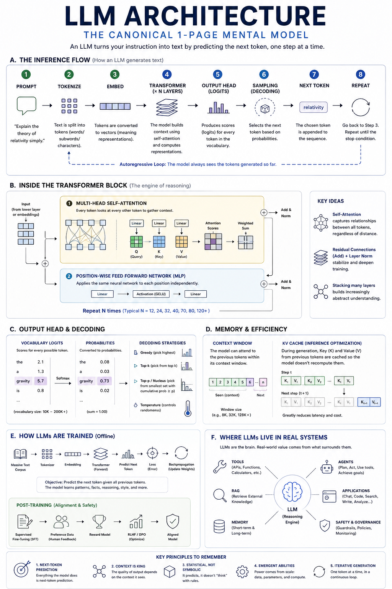

A sentence built with autocomplete像自動完成一樣，一步步拼出句子
Imagine covering every word after this one. The model repeatedly asks: “Given everything visible so far, what small text piece could come next?”想像把這句話後面的字全部遮住。模型會反覆問：「根據目前看得到的一切，下一小段文字最可能是什麼？」
No code. No equations required. Follow one prompt through the machine, then explore the ideas that make the system useful — and fallible.不需要寫程式，也不必先懂公式。跟著一則提示走進模型，再一步步看懂它為何有用，又為何可能出錯。
An LLM does not retrieve a finished sentence. It repeatedly predicts one plausible next token from the context it can see.LLM 不是把一整句現成答案拿出來，而是根據目前看得到的上下文，反覆預測一個合理的下一 token。
That one loop explains both the fluency and the uncertainty.這個循環，同時解釋了它為何流暢，也解釋了它為何不確定。

Think of generation as a relay race. Each stage changes the form of the same information, then hands it to the next stage.把生成想成一場接力賽：每一站都把同一份資訊轉換成新的形式，再交給下一站。
Your words are the working context. Clear instructions and relevant facts change what becomes likely next.
Imagine covering every word after this one. The model repeatedly asks: “Given everything visible so far, what small text piece could come next?”想像把這句話後面的字全部遮住。模型會反覆問：「根據目前看得到的一切，下一小段文字最可能是什麼？」
The base model does not look up a stored sentence. It computes a new distribution of possibilities at every step. External search only happens when a surrounding system provides it.基礎模型不是去資料庫找出一句現成答案，而是在每一步重新計算各種可能性。只有外部系統提供搜尋時，它才真的會查資料。
A token is the model's text-sized building block. “Unbelievable” might be one token or several pieces; Chinese characters, punctuation, and spaces also become tokens. Token boundaries are chosen by the tokenizer, not by grammar.Token 是模型處理文字的基本單位。「unbelievable」可能是一個 token，也可能被拆成幾段；中文字、標點與空格也會成為 token。怎麼切，是由 tokenizer 決定，不是由文法決定。
The temporary activations, token sequence, and cache grow as the answer is generated. The trained weights normally stay fixed. A chat can influence the answer through context without teaching the base model new weights.答案生成時，暫時的活化值、token 序列與快取會持續增加；已訓練好的權重通常不變。對話可以透過上下文影響當次答案，但不等於把新知永久教進基礎模型。
Each transformer block mixes information across tokens, transforms it, and passes a richer representation to the next block.每個 Transformer 區塊都會先讓 token 交換資訊，再進一步轉換，然後把更豐富的表示交給下一層。
What am I looking for?我正在找什麼？
What kind of information do I offer?我能提供哪一類資訊？
What information should be passed along?真正要傳遞的是什麼資訊？
Library analogy: the Query is your question, Keys are catalog labels, and Values are the useful pages you bring back.圖書館比喻：Query 是你要找的問題，Key 是目錄標籤，Value 則是最後帶回來的有用內容。
Different heads can specialize in different patterns — reference, position, syntax, topic — then combine their results. A head is not guaranteed to have one human-readable job.不同的 head 可以偏向不同模式，例如指涉、位置、句法或主題，再把結果合併。但不應假設每個 head 都有單一、可直接用人話命名的工作。
When predicting the next token, attention can use earlier tokens but not future ones. This keeps training aligned with one-token-at-a-time generation.預測下一 token 時，注意力可以使用前面的 token，不能使用未來的 token。這讓訓練方式與逐 token 生成保持一致。
Early layers can form local patterns; later layers can combine those patterns into more abstract relationships. Depth lets the model repeatedly revise what each token represents in light of the whole visible context.前面的層可能先形成局部模式，後面的層再把這些模式組合成更抽象的關係。深度讓模型能依照看得到的整體脈絡，反覆修正每個 token 的表示。
Residual connections preserve an easier route for information and gradients. Normalization keeps signal scales well-behaved. Together they make deep transformers practical to train, but they are supporting structure rather than separate reasoning modules.殘差連接替資訊與梯度保留較順的路徑；正規化則讓訊號尺度維持穩定。兩者讓深層 Transformer 更容易訓練，但它們是支撐結構，不是獨立的「推理模組」。
The model first scores every token in its vocabulary. Decoding turns those scores into one actual choice.模型會先替詞彙表中的每個 token 打分；解碼則把這些分數變成一個真正的選擇。
Temperature does not add knowledge. It reshapes the same token scores: low values make the leading choice dominate; high values make alternatives more competitive.溫度不會增加知識。它只是重新調整同一組 token 分數：低溫讓領先者更突出，高溫則讓其他選項更有競爭力。
Always pick the highest-probability token. Predictable, but it can become repetitive or miss a better sequence.每次都選機率最高的 token。結果可預期，但可能重複，也可能錯過整體更好的句子。
Keep only the k highest-ranked tokens, then sample among them. The size of the candidate set is fixed.只保留排名前 k 的 token，再從中抽樣；候選集合大小固定。
Keep the smallest set whose combined probability reaches p, so the candidate set adapts to confidence.保留累積機率達到 p 的最小候選集合，因此集合大小會隨模型信心調整。
The output head projects the current representation to one raw logit per vocabulary token. Softmax converts those logits into positive probabilities that add up to one. Decoding then chooses from that distribution.輸出頭會把目前的表示投影成詞彙表中每個 token 的一個原始 logit。Softmax 再把 logits 轉成總和為一的正機率；最後由解碼策略從這個分布中選擇。
A model's immediate working memory is its context window. The KV cache makes rereading that working memory faster.模型當下的工作記憶是上下文視窗；KV 快取則讓模型重新使用這段工作記憶時更有效率。
Instructions, source material, chat history, and generated tokens all share this finite space.指令、參考資料、對話歷史與已生成的 token，都共用這個有限空間。
During generation, earlier attention keys and values are saved. The next step computes only the new token's entries and reuses the rest.生成時，先前 token 的注意力 Key 與 Value 會被保存；下一步只計算新 token 的部分，其餘直接重用。
Context is text available for this request. A product may also store conversation summaries, profiles, or documents outside the model and place them into future context. That is system-level memory, not a permanent change to the base model.上下文是這次請求中可用的文字。產品也可能在模型外保存對話摘要、個人設定或文件，未來再放回上下文；那是系統層的記憶，不是基礎模型被永久改寫。
The application must remove, summarize, or avoid adding some material. Important early details can disappear unless the system deliberately preserves them. A larger window increases capacity, but it does not guarantee perfect attention to every detail.應用程式必須刪除、摘要，或避免加入部分內容。若系統沒有刻意保留，前面的重要細節可能消失。更大的視窗提高容量，但不保證模型能完美注意每個細節。
It reduces repeated computation, which can lower latency and cost. But the cache also consumes accelerator memory, so serving systems balance response speed, context length, model size, and the number of simultaneous users.它能減少重複計算，進而降低延遲與成本；但快取本身也會占用加速器記憶體。因此服務系統必須在回應速度、上下文長度、模型大小與同時使用人數之間取捨。
Pretraining compresses patterns from vast text into weights. Post-training then shapes how the model follows instructions and behaves.預訓練把大量文字中的模式壓縮進權重；後訓練再塑造模型如何遵循指令與展現行為。
The model sees text sequences and tries to predict the next token. Error signals flow backward, nudging billions of weights. Repeated at scale, this produces statistical knowledge of language, facts, styles, and problem patterns.模型讀取文字序列並嘗試預測下一 token。誤差訊號向後傳，微調數十億個權重。經過大規模反覆訓練，模型逐漸形成語言、事實、風格與解題模式的統計知識。
Curated demonstrations teach instruction-following. Human or model preferences compare responses. Methods such as RLHF or DPO optimize toward preferred behavior, with safety evaluations and policy training around them.精選示範教它遵循指令；人類或模型偏好用來比較答案；RLHF、DPO 等方法再朝偏好行為優化，並搭配安全評測與政策訓練。
Training changes a distributed web of numeric parameters. The result can reproduce patterns and sometimes memorized fragments, but it is not a searchable archive of its training corpus.訓練改變的是分散在整個模型中的數值參數網路。模型能重現模式，有時也可能記住片段，但它不是一個可搜尋的訓練資料全文資料庫。
There is no single scientific test that settles every meaning of “understand.” Operationally, an LLM builds internal representations that support explanation, translation, planning, and abstraction — while still lacking guaranteed truth, stable goals, and human experience. Judge capabilities task by task, not by one loaded word.「理解」有多種定義，沒有單一科學測試能一次定案。就功能而言，LLM 形成的內部表示能支援解釋、翻譯、規劃與抽象化；但它仍不具備真實性保證、穩定目標或人類經驗。應逐項評估能力，不要只靠一個含義沉重的詞下結論。
Prompting changes the temporary context; fine-tuning changes weights. Prompting is fast and reversible. Fine-tuning can make behavior more consistent at scale, but it requires data, evaluation, cost, and governance.提示改變的是暫時上下文；微調改變的是模型權重。提示快速且可回復；微調能讓大規模使用時的行為更一致，但需要資料、評測、成本與治理。
The LLM is the reasoning and language engine. Reliable value comes from the tools, data, workflow, memory, interfaces, and controls around it.LLM 是語言與推理引擎；真正可靠的價值，來自周圍的工具、資料、流程、記憶、介面與控制機制。
APIs · code · calculatorsAPI · 程式 · 計算器
Fresh, grounded knowledge最新且可追溯的知識
Profiles · summaries · history設定 · 摘要 · 歷史
Plan · act · observe規劃 · 行動 · 觀察
Chat · search · workflow對話 · 搜尋 · 工作流
Policy · access · monitoring政策 · 權限 · 監控
Read the goal and current state.讀取目標與目前狀態。
Choose the next bounded action.選擇下一個有邊界的行動。
Use a tool under permissions.在權限範圍內使用工具。
Check the result and decide whether to continue.檢查結果，決定是否繼續。
RAG can bring current or private documents into context. It improves traceability, but retrieval quality, source authority, and answer verification still matter.RAG 能把最新或內部文件帶進上下文，提高可追溯性；但檢索品質、來源權威性與答案驗證仍然重要。
Reliable systems define allowed tools, data access, approvals, logs, evaluation criteria, fallbacks, and human ownership — especially for consequential actions.可靠系統會明確定義可用工具、資料權限、核准機制、紀錄、評估標準、備援與人類責任歸屬，尤其是有重大後果的行動。
If the details fade, these principles will still help you reason about LLM behavior.即使細節忘了，這五個原則仍能幫你判斷 LLM 的行為。
Every answer is assembled one token at a time.每個答案都是一次一個 token 組裝出來的。
The quality of output depends on what the model can see now.輸出品質取決於模型當下看得到什麼。
The model learned distributed patterns, not a complete rulebook.模型學到的是分散的模式，不是一本完整規則書。
Data, parameters, compute, and training design interact.資料、參數、算力與訓練設計彼此交互作用。
Each chosen token changes the context for the next choice.每個選出的 token 都會改變下一步的上下文。
Search in English or Traditional Chinese. Each term links back to its main chapter.可用英文或繁體中文搜尋；每個詞都能回到主要章節。
A calculation that lets each token weigh relevant earlier tokens when building its context-aware representation.讓每個 token 在建立脈絡表示時，衡量前面哪些 token 與它最相關的計算方式。
Generating one token at a time, with each new token conditioned on the tokens already present.一次產生一個 token；每個新 token 都以目前已有的 token 為條件。
The training procedure that calculates how each weight contributed to an error so the weights can be adjusted.訓練時用來計算每個權重對誤差影響多大的方法，讓權重能朝較好的方向調整。
The limited span of tokens a model can consider in one request, including input and generated output.模型在一次請求中能同時納入考量的 token 範圍，包含輸入與產生中的輸出。
A learned list of numbers that gives a token a useful starting position in the model's meaning space.模型學到的一串數字，讓 token 在模型的意義空間中有一個可運算的起點。
Additional training that changes model weights for a narrower behavior, domain, or task.為特定行為、領域或任務做額外訓練，會實際改變模型權重。
Using a trained model to produce an answer. The normal generation process does not update model weights.使用已訓練好的模型產生答案；一般生成過程不會更新模型權重。
Stored attention keys and values from earlier tokens, reused to avoid repeating the same calculations during generation.保存先前 token 的注意力 Key 與 Value，生成時重複使用，避免每一步都重新計算。
A raw score for a possible next token before scores are converted into probabilities.每個候選下一 token 在轉成機率前的原始分數。
A small neural network applied to each token position after attention, transforming the information found there.注意力計算後，對每個 token 位置個別套用的小型神經網路，用來轉換該位置的資訊。
A learned numeric weight inside a model. Together, parameters encode the patterns acquired during training.模型內部學到的數值權重；所有參數共同承載訓練期間學到的模式。
The input given to a model: instructions, questions, examples, context, and sometimes tool results.提供給模型的輸入，可包含指令、問題、範例、背景資料，有時也包含工具結果。
Retrieving relevant external information and placing it into the model's context before it answers.先從外部資料來源找出相關資訊，放進模型的上下文後再回答。
A shortcut path that adds a block's input back to its output, helping information and training signals travel through deep networks.把區塊輸入加回輸出的捷徑，幫助資訊與訓練訊號穿過很深的網路。
A function that converts logits into a probability distribution whose values add up to one.把 logits 轉成總和為一的機率分布函數。
A decoding control that reshapes probabilities. Lower values concentrate choices; higher values spread them out.重新調整機率分布的解碼控制。數值較低會集中選擇，較高則讓選擇更分散。
A chunk of text the model reads and writes. It may be a whole word, part of a word, punctuation, or a character.模型讀寫文字時使用的片段，可能是一個詞、半個詞、標點或單一字元。
The neural-network architecture behind modern LLMs, built from repeated attention and MLP blocks.現代 LLM 的主要神經網路架構，由重複堆疊的注意力與 MLP 區塊組成。
An ordered list of numbers. Models represent and transform token information as vectors.一串有順序的數字；模型以向量表示並轉換 token 資訊。
The learned numbers that shape how signals move through the model. Parameters and weights are often used nearly interchangeably.決定訊號如何流過模型的已學習數值；實務上常與「參數」近義使用。
No matching terms. Try a broader word.找不到相符詞彙，請嘗試更廣泛的關鍵字。